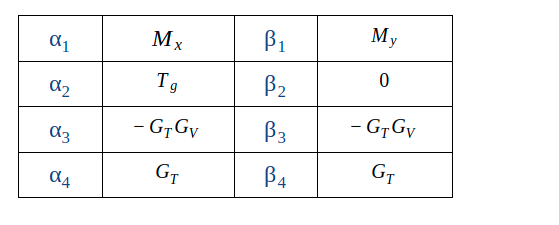
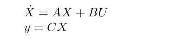
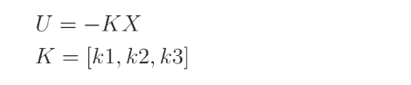
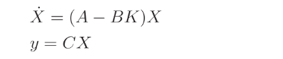
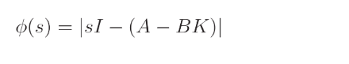
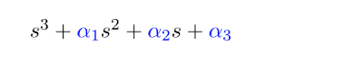
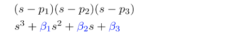
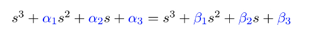

LAB 5: Controller Design¶
Introduction¶
Welcome to the fifth session of the ES3011 experimental labs.
In this lab, we will learn how to design feedback controllers to achieve desired system performance.
We will cover three sections in this lab:
-
PID control design for basic dynamical systems
-
Control design for the BalBot (self-balancing robot) using state feedback
Learning Outcomes¶
Our goal at the end of this labs is that you should be able to:
- Understand how to design controllers for basic dynamical systems using P and PID control
- Understand how to design controllers for real robotic systems (the BalBot) using state feedback
1. PID Control Design for Basic Dynamical Systems¶
In this section, you will design feedback controllers for basic dynamical systems (i.e. mass-spring-damper and DC motor).
Instructions:¶
In this lab instruction sheet,
- Complete problems I (Mass-spring-damper) and IV (Motor position) in the MATLAB section.
2. Control Design for the BalBot (self-balancing robot) using State Feedback¶

In this section, we will learn about state feedback and use this approach to design a feedback controller for the Balbot.
Instructions:¶
-
Stability of the Balbot
In Lab 4, we explored the transient response of the balbot in MATLAB and found that it is unstable (the system response is unbounded). Practically, we see that the robot falls over when it is placed upright. The stability of the system is dependent on the poles of the characteristic equation.
-
In your MATLAB script:
- Compute the poles of the system. Hint: You can either use
pole(<your-transfer-function>)oreig(<your-A-matrix>). - Plot the poles and zeros of the system. Hint: You can either use
pzmap(<your-transfer-function>).
- Compute the poles of the system. Hint: You can either use
-
Briefly describe your observation.
-
Note
Please change the system parameter Gt = 2*Kt/R. This is because as we use the robot, we will be computing a single input voltage which would be the average of Vr and Vl (or V+/2)

-
Formulating the state feedback controller
Recall that the state-space of the balbot is:

In formulating our state feedback, we set the input, U, as a function of the system state, X, and then choose the values of the K which would lead to a stable system.

Hence, we get the new state-space of the robot to be:

Now to compute the values of K (i.e. k1, k2, k3) which make the system stable, we compute the new characteristic equation of the system as a function of K and then see the values of K for a given system pole placement.

- Compute the characteristic equation of the system as a function of K (i.e. k1, k2, k3) by hand. Hint: Your result will take the following structure:

-
Formulate your desired characteristic equation based on your desired poles.
- Example 1: To set poles at p = -10, we will set our desired equation to be (s + 10)^3
- Example 2: To set poles at p1 = -10, p2 = -20, p3 = -2, we will set our desired equation to be (s + 10)(s + 20)(s + 2)
-
Hence, choose your desired poles and formulate your characteristic equation in the form below:

-
Next, compute the values of K required to make your desired characteristic equation and your new system characteristic equation equal.

-
Evaluating the state feedback controller in MATLAB
Using the feedback gains (K) obtained above, evaluate the system transient response.
-
In your MATLAB script:
- Compute the poles of the new system. Hint: Use
eig(<your-(A-BK)-matrix>) - Plot the poles and zeros of the system.
- Hint: Create a new state-space model using A = A-BK, and others as the same as before, then use
ss2tfto obtain the transfer function. Lastly usepzmap(<your-transfer-function>)to plot.
- Hint: Create a new state-space model using A = A-BK, and others as the same as before, then use
- Compute the poles of the new system. Hint: Use
-
Briefly describe your observation. You can try different pole values to see the effect on the system response.
-
-
Implementing on the Balbot
Once we have a good feedback controller in simulation, we can then implement it on the physical balbot.
-
Update the Balbot software on your local PC by running the
git pullcommand in the directory where you cloned the WPI-ES3011 repository. -
Insert your model parameters and the state feedback gain values in the controller.cpp file. You will see the points marked in the file.
-
Load the code to the robot and observe its behavior.
- Hint: The behavior of the balbot in balancing would be based on the poles you defined above and the resulting gains. If you find unsatisfactory behavior, modify your pole values and update the gains.
-
Take a very short video (convert to a short GIF) of your best performing controller and report what control parameters are. See below for reference:

-
What to Submit:¶
Prepare a report which contains the following:
- Introduction: a few sentences to introduce the topic of the lab
- Section 1: PID Control Design for Basic Dynamical Systems
- Include plots and comments as the questions request.
- Section 2: Control Design for the BalBot (self-balancing robot) using State Feedback
- Make sure you include all the plots, equations and observation discussions requested above.
- Upload the short GIF of your robot balancing after you push it (as you see in the figure above) to Canvas. Follow link for a good GIF creator.
- Conclusion: a few sentences concluding the report explaining the goals, what you learned, and any other conclusions.